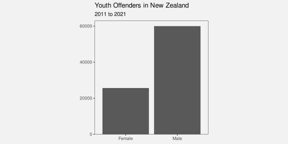
9 Combining Encodings
Most data visualisations involve more than one data variable. For example, the bar plot in Figure 9.1 involves data on the gender of offenders and data on the count of offenders for each gender.
In Figure 9.1, each data value is encoded as a visual feature of a data symbol (Figure 3.2). For example, the gender is encoded as the horizontal position of the bars and the count of offenders is encoded as the length of the bars.
We have so far only looked at encodings from data values to visual features in isolation. For example, we know that the encoding from gender to position is effective because position is appropriate for qualitative data (Section 3.4) and position has sufficient capacity to differentiate between two genders (Section 3.6). We also know that encoding the count of offenders to length is effective because length is appropriate for quantitative data (Section 3.3) and length provides an accurate decoding (Section 3.5).
In this chapter, we begin to consider what happens when encodings are used in combination. For a start, we will just extend our thinking to data visualisations that involve encoding two data variables to two visual features, like gender and count to position and length. Furthermore, we will restrict ourselves to encodings where each pair of data values are encoded as a single data symbol (Figure 9.2). For example, in Figure 9.1, each combination of gender and count produces a single bar.


x and y) is encoded to two visual features (a and b) of a single data symbol. For example, if there are four pairs of data values, we end up with four data symbols, each of which encodes a single pair of data values.
9.1 Independent visual features
A bar plot involves encoding a qualitative variable as bar position and a quantitative variable as bar length (e.g., Figure 3.1). We know that each visual feature is effective on its own—we can decode from positions to qualitative values and we can decode from lengths to quantitative values—but another reason why the bar plot is effective overall is because the two visual features act independently.1 Our perception of the horizontal length of the bars is not affected by the vertical position of the bars.2
Figure 9.3 demonstrates that we can also add colour to the mix without creating any interactions between visual features. The fact that the two bars are blue and red does not affect our ability to perceive that they have different lengths.
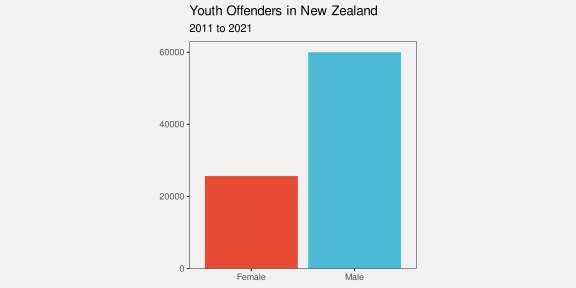
One reason why a bar plot is effective is because data values are encoded as visual features that can be decoded independently.
9.2 Scatter plots
Table 9.1 shows data gathered on the performance of all twenty teams at the 2023 Rugby World Cup. Most measures are positive, for example, more points is better, but there are also a couple of negative measures: more tackles may just mean that the team was weak and was always having to defend; and more disciplinary cards (either yellow or red) is definitely a bad sign.
| country | sphere | ycards | rcards | breaks | tackles | points | converts | offloads | tries | runs |
|---|---|---|---|---|---|---|---|---|---|---|
| Namibia | South | 1.0 | 0.5 | 2.5 | 102.0 | 9.2 | 0.5 | 2.2 | 0.8 | 92.0 |
| Romania | North | 1.2 | 0.0 | 2.8 | 142.5 | 8.0 | 0.8 | 1.5 | 1.0 | 81.0 |
| Chile | South | 1.2 | 0.0 | 3.8 | 132.2 | 6.8 | 0.5 | 5.2 | 1.0 | 102.2 |
| Samoa | South | 1.2 | 0.2 | 3.8 | 109.5 | 23.0 | 2.0 | 9.2 | 2.8 | 102.5 |
| Australia | South | 0.5 | 0.0 | 5.2 | 108.2 | 22.5 | 1.8 | 7.8 | 2.8 | 110.8 |
| Georgia | North | 0.5 | 0.0 | 5.2 | 149.8 | 16.0 | 1.0 | 8.0 | 1.8 | 114.0 |
Figure 9.4 shows a scatter plot of the number of “clean breaks” per game versus the number of “tries scored” per game for each team. A clean break means that a team has broken through the opposition defence and a “try scored” means that the team has earned 5 points. A clean break implies an opportunity to score a try, but does not guarantee that a try will be scored.
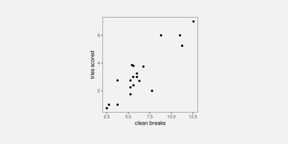
The data symbol in a scatter plot is a data point, in this case a circle. There are two encodings in the scatter plot in Figure 9.4: the quantitative number of clean breaks is encoded as the horizontal position of the data points and the quantitative number of tries scored is encoded as the vertical position of the data points.
We know from Chapter 3 that we should be able to accurately decode the original data values from the positions of the data points. For example, we can easily see that one team scored a little over 7.5 clean breaks per game and we can see that two teams scored about 6 tries per game.
However, there is something else going on in the scatter plot. The two explicit encodings—horizontal and vertical position—interact to create an additional emergent visual feature: position in space (Figure 9.5).3 For example, we can perceive not only horizontal and vertical distances between data points, but also euclidean distances between data points (“as the crow flies”).
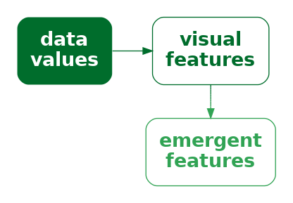
One reason why a scatter plot is effective at conveying relationships between variables is because the encodings of data values to visual features—horizontal position and vertical position—interact to produce an additional visual feature: position in space.
Furthermore, our visual system allows us to decode visual summaries (Section 8.2) from position in space (Figure 9.6).4 For example, in Figure 9.4 we can easily see a positive correlation between the number of clean breaks and the number of tries scored. The points lie roughly along a line from bottom-left to top-right.
We can also easily see clusters of data points; the four data points in the top-right corner of the plot appear separate from the other data points because they share a similar position in space (Section 2.7).
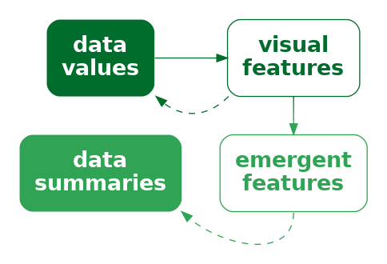
One reason why a scatter plot is effective at conveying relationships between variables is because we are able to decode visual summaries from a collection of positions in space.5
Although a scatter plot is similar to a bar plot because they both involve two encodings—position and length for a bar plot and horizontal position and vertical position for a scatter plot—there are additional decodings possible from the data symbols in a scatterplot because the additional visual feature of position in space emerges from the combination of horizontal and vertical position.
9.3 Visual features that interact
We have seen that some combinations of visual features, such as position and length (Figure 9.1) and position and hue (Figure 9.3) do not interact, while other combinations of features, such as horizontal and vertical position (Figure 9.4) do interact. What about other combinations of visual features? Figure 9.7 shows all pairwise combinations of visual features that we have considered (Figure 3.5).6
The top row of Figure 9.7 shows that position can be combined independently with every other visual feature, except itself (Section 9.2), even when we vary both visual features at once.
For other combinations, Figure 9.7 shows an array of data symbols, with one visual feature changing down rows and another visual feature changing across columns. If the visual features are independent, we should be able to decode one visual feature from the rows and one visual feature from the columns. For example, for the combination of hue and pattern, we can clearly see columns with the same hue and rows with the same pattern.
If the visual features interact, we should not be able decode separate visual features. For example, for the combination of chroma and luminance, all we can see is an array of different shades; there are no clear rows of different chroma or columns of different luminance.
There are also combinations that are not fully independent and have weak interactions between visual features. For example, the decoding of hue, chroma, and luminance is somewhat affected by the area of the data symbol (see the row for **area* in Figure 9.7).7 Another weak interaction is between hue and luminance; the partial independence of theses visual features still allows for diverging colour palettes (Section 6.10).
One clear message from Figure 9.7 is that all visual features interact with themselves. If we try to encode two separate data variables as the same visual feature, it may be difficult to decode the individual data variables. We can also see that combinations of length, angle, area, and pattern produce interactions, as do combinations of area, hue, chroma, and luminance. However, combinations of one of hue, chroma, or luminance with any of position, length, angle, area, or pattern are independent.
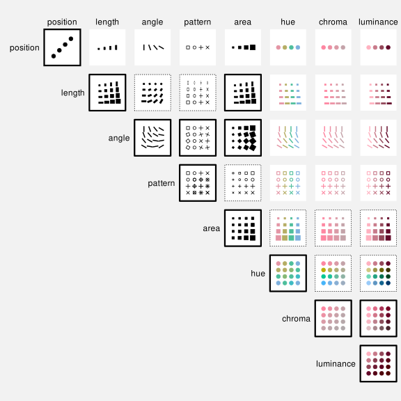
9.4 Case study: Mosaic plots
Table 9.2 shows a table of counts for offences committed in New Zealand in 2021. For each offence, we know the sex of the offender and what action was taken against the offender.
| Female | Male | |
|---|---|---|
| Court Action | 13950 | 39526 |
| Non-Court Action | 8717 | 19663 |
| Not Proceeded With | 381 | 933 |
Figure 9.8 shows a mosaic plot of the data in Table 9.2.8 This is an effective data visualisation for making several comparisons: the overall proportion of male versus female offenders; within each sex, the proportion of different actions against offenders; between sexes, the distribution of different actions; and the overall proportions of combinations of sex and action against offenders.
For example, we can see that there are more male offenders than female offenders, court action is more common than non-court action for both males and female offenders, court action is more common for male offenders than for female offenders, and the most common offences involve male offenders and result in court action.
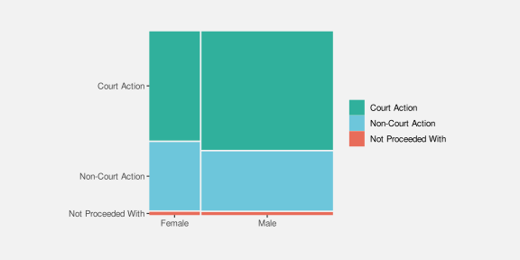
A mosaic plot is another example of a data visualisation that encodes data summaries to data symbols rather than raw data (sec-summaries). The data symbols are rectangles, the proportions of male versus female offenders are encoded as the widths of the rectangles, and the proportions of different actions taken, within males and females, are encoded as the heights of the rectangles (see Table 9.3).
| Female | Male | |
|---|---|---|
| Court Action | 0.28 | 0.72 |
| Non-Court Action | 0.28 | 0.72 |
| Not Proceeded With | 0.28 | 0.72 |
| Female | Male | |
|---|---|---|
| Court Action | 0.61 | 0.66 |
| Non-Court Action | 0.38 | 0.33 |
| Not Proceeded With | 0.02 | 0.02 |
One reason why a mosaic plot is effective for decoding proportions and conditional proportions is because it encodes proportions and conditional proportions, rather than raw counts, to the visual features of rectangles.
The explicit encodings in a mosaic plot involve encoding proportions as the widths and heights of the rectangles and we know from Section 3.3 that this will allow accurate decoding from lengths to proportions.
One reason why a mosaic plot is effective is because it encodes proportions to lengths.
However, a mosaic plot is also an example of a data visualisation that encodes data values to visual features that interact. The interaction of the encoded rectangle widths and rectangle heights produces an emergent feature, which is the area of the rectangles (Figure 9.5). Importantly, these areas correspond to additional data summaries, in this case, the overall proportion of offences in each combination of sex and action taken.
One reason why a mosaic plot is effective is because the encodings
to length and height interact to produce area, which represents overall proportions.
One weakness of mosaic plots is that area is not the most accurate visual feature (Section 3.5), so we are not able to decode overall proportions from the rectangle areas as accurately as we are able to decode the proportions that are represented by the separate widths and heights of the rectangles.
Another weakness is that the lengths and heights of the rectangles are unaligned (Section 5.2). This compromises the accuracy of comparisons of widths between categories or the comparisons of heights between categories. This weakness is greater if there are more categories and/or larger differences between categories than we see in Figure 9.8. For example, Figure 9.9 shows a mosaic plot of the proportions of offenders in different age groups and, within age groups, the proportions of actions against the offender at a finer level of detail than in Figure 9.8. If we attempt to compare the proportion of offences that result in “Formal Warnings” in younger age groups versus older age groups, we are hampered by the fact that the pink rectangles do not have a common vertical baseline. As a side note, we are also hampered in that case by the distance and distractors between the rectangles (Section 5.1); the ordering of the variables and the ordering of categories can have an impact on the effectiveness of a mosaic plot just like the ordering the bars in a bar plot.
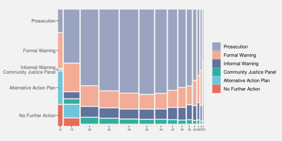
These weaknesses are exacerbated for mosaic plots of more than two variables. For example, the mosaic plot in Figure 9.10 shows the proportions of youth versus adult offenders, then, within age levels, the proportions of male versus female offenders, then, within combinations of age levels and sex, the proportions of different actions taken against the offender. Even though there are only very few levels for each variable, our ability to compare heights and widths of rectangles is impaired by inconsistent baselines, distance between rectangles, and distractors.
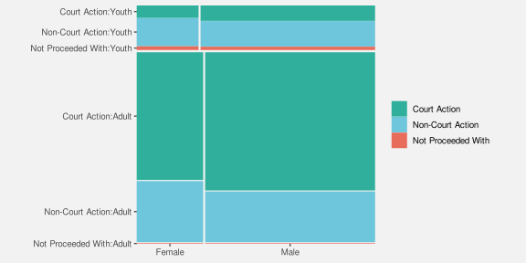
A final weakness with mosaic plots is that the shape of the rectangles changes as well as the area. In Section 7.5 we saw that changes in visual features should only reflect changes in the data. Figure 9.11 shows that we can create different rectangles with the same area, but different shapes. There can be rectangles within a mosaic plot with the same area, which represents the same overall probability data value, but with different shapes. The different shapes are a visual signal of differences in the data when in reality no difference exists.
9.5 Case study: Interaction plots
Figure 9.12 shows an interaction plot of the number of offenders in different ethnic groups, comparing 2011 to 2021. The raw data are shown in Table 9.4.
| group | year | count |
|---|---|---|
| Māori | 2011 | 5957 |
| Pasifika | 2011 | 1092 |
| European/Other | 2011 | 5775 |
| Unknown | 2011 | 194 |
| Māori | 2021 | 2869 |
| Pasifika | 2021 | 328 |
| European/Other | 2021 | 1833 |
| Unknown | 2021 | 1589 |
The purpose of the interaction plot is to show the change in the number of offenders between 2011 and 2021 for each of the ethnic groups. If the lines of the interaction plot were parallel we would conclude that the same change has happened to all ethnic groups; the fact that the lines are not parallel indicates that there have been different changes in some ethnic groups compared to other ethnic groups.9
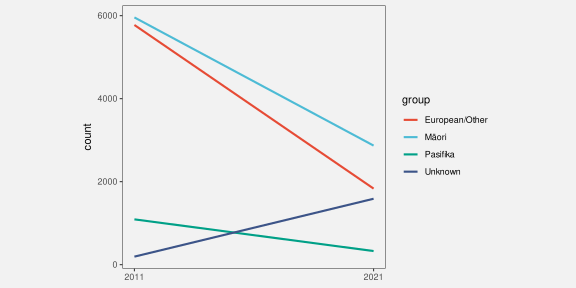
The data symbols in Figure 9.12 are straight line segments. The year is encoded as the horizontal start and end position of the lines and the number of offenders is encoded as the vertical start and end position of the lines. The ethnic group is encoded as the colour of the lines. These encodings are effective for decoding the raw data values in Table 9.4 from the end points and the colours of the lines.
In addition, the explicit encodings generate an emergent feature: the angle of the lines. Furthermore, the angle of the lines allow us to decode a data summary: the change in the number of offenders between 2011 and 2021 (Figure 9.6).
An interaction plot is effective because it allows us to decode changes in the data values from the angles of the lines.
By comparison, it is more difficult to decode and compare the change in the number of offenders for each ethnic group in a bar plot like the one shown in Figure 9.13. Partly this is because we have to decode the lengths of two bars for each ethnic group rather than the slope of a single line.10
On the other hand, individual data values, such as the number of offenders in a single ethnic group for a single year, are easier to decode from the bar plot in Figure 9.13 than from the lines in Figure 9.12. This is an example of the emergent feature (slope) partially obscuring the explicit encodings (horizontal and vertical position) in Figure 9.12. We will discuss this more in Chapter 10.
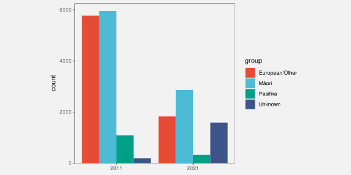
9.6 Decoding combinations of visual features
When we combine visual features that are independent, each visual feature can can be decoded separately. In that case, the decoding of the combination can be reduced to the decoding of the individual features. This means that we can determine the effectiveness of a combination of features based on the effectiveness of the individual features. For example, the combination of length and position in a bar plot like Figure 9.1 is effective because length is an effective encoding (for quantitative data) and position is an effective encoding (for qualitative data).
When we combine visual features that interact, the situation is more complicated. There are two parts to consider: the individual features that are being combined and the emergent feature that results from the interaction between the individual features.
One issue is that the individual features may be difficult to decode on their own (Section 9.4). In that case, the effectiveness of the combination is dependent mainly on the emergent feature.
The effectiveness of the emergent feature is straightforward to determine when the emergent feature is one the basic features that we already know about. Examples of this case are combinations of length producing area, as in a mosaic plot (Figure 9.8), and combinations of position producing angle, as in an interaction plot (Figure 9.12). Figure 9.7 shows several other cases of this sort. For example, the combinations of colour features—hue, chroma, and luminance—all just produce different colours.
However, when the emergent feature is not one of the basic features, we need more information to know how that emergent feature will perform. An example of this situation is when a combination of horizontal and vertical positions in a scatter plot produce position in space (Figure 9.4).
Even when the emergent feature is known, another issue is that the emergent feature decodes to a data summary, rather than the raw data values. As we saw in Section 8.4 this creates a problem because there are many possible data summaries to consider and there is less known about how well these decodings perform.
However, in the specific case of decoding a data summary from the positions of multiple data symbols within a scatter plot—decoding correlation from position in space—experiments have shown that the decoding is reasonably accurate. We are quite good at decoding the strength of a linear relationship from a scatter plot.11
9.7 Dangers of combining encodings
Figure 9.14 shows a plot of changes in health spending by successive New Zealand governments.12 In this data visualisation, the average percent change in health spending over a government’s entire term is encoded as the height of a bar, with the duration of that government’s term encoded as the width of the bar. Because height and width are visual features that interact, the result is an area for each government’s term. However, that area has no sensible interpretation; what does a percent multiplied by a number of years mean? The areas of the bars do not correspond to any property of the data values.
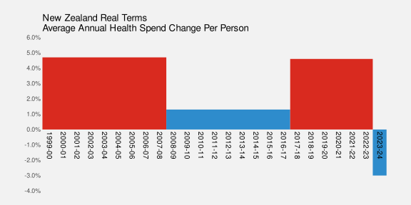
The interaction of visual features can be a boon when the interaction produces an emergent feature that can be decoded to properties of the data (as in a scatter plot, or mosaic plot, or interaction plot). However, it is possible to create a poor data visualisation if we produce an emergent feature that has no correspondence with data values (Figure 9.15).
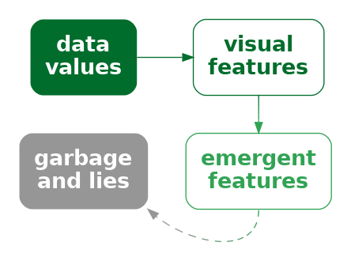
A data visualisation can be misleading if we encode data values using a combination of visual features that have a strong interaction, but the values that we decode from the resulting emergent feature do not correspond to any meaningful summary of the data.
Figure 9.16 shows a different representation of the data from Figure 9.14. In this case, the average percent change in health spending is encoded as the (vertical) position of a line and the duration is encoded as the length of the line. These visual features do not interact, so we no longer have a misleading emergent visual feature.
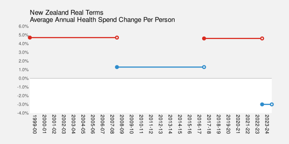
9.8 Case study: Redundant encodings
Figure 9.17 shows a bar plot of various performance metrics for the football player Lamine Yamal from July 2024.13 The percentile values show how Yamal ranked against other similar players on each metric. He is a relatively good football player.
Figure 9.17 is a typical bar plot in that it encodes qualitative data values as the (vertical) position of the bars and quantitative data values as the lengths of the bars. However, there is also a third encoding in Figure 9.17: the percentile values are also encoded as the colour of the bars.14
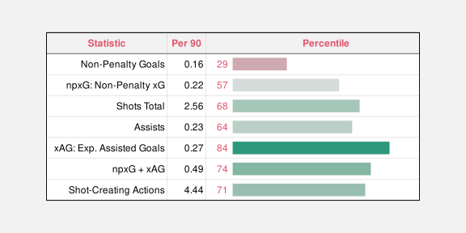
The additional encoding of percentile is redundant in the sense that we can already decode the perentile from the length of the bars. However, having the additional encoding means that we have two ways to decode the percentile: from the length and from the colour (Figure 9.18).
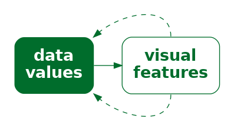
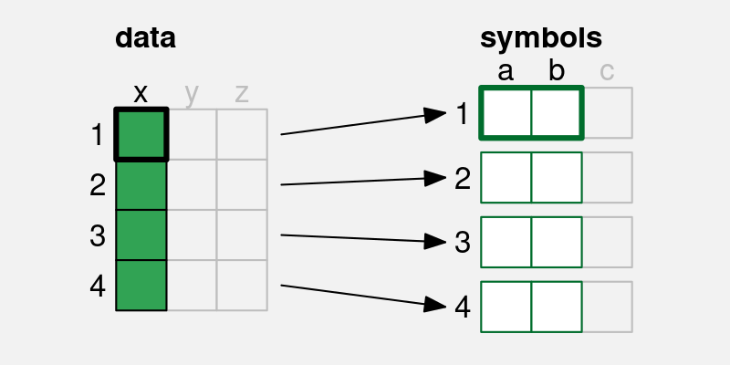
x) is encoded to not just one visual feature (a), but also a second visual feature (b), of a single data symbol. If we encode data values using multiple visual features, then multiple decodings are possible.
The effectiveness of a redundant encoding partially depends upon the independence of the two visual features. The features are only redundant if we are able to decode data values from the two features separately, as we can with colour and length.
One useful application of redundant encoding is to accommodate viewers with CVD (Section 6.7). Having a secondary decoding alongside colour allows for the fact that the colour decoding may fail for some viewers. For example, Figure 9.19 shows what Figure 9.17 might look like to a viewer with severe red-green colour blindness. The distinction between red and green bars is gone and that in turn confuses the decoding of the bar luminance (changes in luminance are not monotonic with changes in length). However, thanks to the redundant encoding, the simple comparison between bar lengths remains.
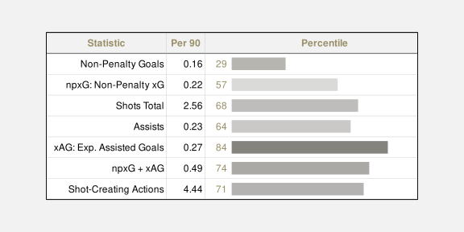
One argument against using a redundant encoding is that we are introducing additional visual complexity. Each individual visual feature may not be as effective as it would be on its own because it is not the only visual change (Section 2.5). For example, Figure 9.20 shows a variation on Figure 9.17 with the redundant encoding removed—all of the bars are just the same dark grey. It is arguably easier to decode the lengths of the bars in Figure 9.17 because the bars are less complex visual objects. This is even more true when comparing with the confusing changes in luminance of the bars in Figure 9.19.15
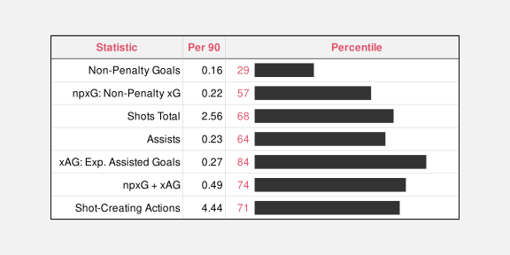
9.9 Summary
Almost all data visualisations involve combinations of encodings. More than one set of data values are encoded as more than one visual feature of data symbols.
The encodings involved in a bar plot—quantitative data values encoded as lengths and qualitative values encoded as position—are effective because we are able to perceive some combinations of visual features, such as length, position, and colour independently, which means that we can effectively decode both position and length from a bar plot.
A scatter plot is effective for perceiving relationships between variables because the encodings of quantitative data values to both horizontal and vertical positions interact to produce position in space and our visual system is capable of producing useful visual summaries from position in space, such as correlation.
Independence between visual features is useful when we want to decode separate data values. Interactions between visual features is useful when we want to produce an emergent feature that allows us to decode data summaries.
Conversely, independence between visual features is of no help if what we want is to decode a data summary from an emergent feature. Furthermore, interaction between visual features is unhelpful, or even misleading, if we cannot decode any meaningful information from the emergent feature that results from the interaction.
Borkin, Michelle A., Zoya Bylinskii, Nam Wook Kim, Constance May Bainbridge, Chelsea S. Yeh, Daniel Borkin, Hanspeter Pfister, and Aude Oliva. 2016. “Beyond Memorability: Visualization Recognition and Recall.” IEEE Transactions on Visualization and Computer Graphics 22 (1): 519–28. https://doi.org/10.1109/TVCG.2015.2467732.
Braun, Daniel, Remco Chang, Michael Gleicher, and Tatiana von Landesberger. 2025. “Beware of Validation by Eye: Visual Validation of Linear Trends in Scatterplots.” IEEE Transactions on Visualization and Computer Graphics 31 (1): 787–97. https://doi.org/10.1109/TVCG.2024.3456305.
Carswell, C. Melody, and Christopher D. Wickens. 1987. “Information Integration and the Object Display an Interaction of Task Demands and Display Superiority.” Ergonomics 30 (3): 511–27. https://doi.org/10.1080/00140138708969741.
———. 1988. “Comparative Graphics: History and Applications of Perceptual Integrality Theory and the Proximity Compatibility Hypothesis.” https://apps.dtic.mil/sti/citations/ADA202370; U.S. Army Human Engineering Laboratory.
———. 1990. “The Perceptual Interaction of Graphical Attributes: Configurality, Stimulus Homogeneity, and Object Integration.” Perception & Psychophysics 47 (2): 157–68. https://doi.org/10.3758/BF03205980.
Cragin, Anna I., and James R. Pomerantz. 2015. “Emergent Features and Feature Combination.” In The Oxford Handbook of Perceptual Organization, edited by Johan Wagemans. Oxford University Press.
Cui, Lucy, Medha Kini, and Zili Liu. 2024. “Drawn Correlations Consistent with Underestimation of Perceived Correlations from Scatterplots.” Journal of Vision 24 (10): 781–81. https://doi.org/10.1167/jov.24.10.781.
Franconeri, Steven L., Lace M. Padilla, Priti Shah, Jeffrey M. Zacks, and Jessica Hullman. 2021. “The Science of Visual Data Communication: What Works.” Psychological Science in the Public Interest 22 (3): 110–61. https://doi.org/10.1177/15291006211051956.
Garner, Richard. 1974. The Processing of Information and Structure. Hillsdale, NJ: Lawrence Erlbaum Associates.
Huskinson, Peter. 2024. “Follow the Money to See What Budget 2024 Spends on Health.” New Zealand Doctor Rata Aotearoa. https://www.nzdoctor.co.nz/article/opinion/follow-money-see-what-budget-2024-spends-health.
MacEachren, Alan M. 1995. How Maps Work: Representation, Visualization, and Design. 1st ed. New York: The Guilford Press.
Munzner, Tamara. 2014. Visualization Analysis and Design. CRC Press.
Palmer, Stephen E. 1999. Vision Science: Photons to Phenomenology. Cambridge, MA: MIT Press.
Pinker, Steven. 1990. “A Theory of Graph Comprehension.” In Artificial Intelligence and the Future of Testing, edited by Roy Freedle, 73–126. Hillsdale, NJ, US: Lawrence Erlbaum Associates, Inc.
Rensink, Ronald A. 2017. “The Nature of Correlation Perception in Scatterplots.” Psychonomic Bulletin & Review 24 (3): 776–97. https://doi.org/10.3758/s13423-016-1174-7.
Rensink, Ronald A., and Gideon Baldridge. 2010. “The Perception of Correlation in Scatterplots.” Computer Graphics Forum 29 (3): 1203–10. https://doi.org/https://doi.org/10.1111/j.1467-8659.2009.01694.x.
Shah, Priti, and James Hoeffner. 2002. “Review of Graph Comprehension Research: Implications for Instruction.” Educational Psychology Review 14 (1): 47–69. https://doi.org/10.1023/A:1013180410169.
Stone, Maureen. 2012. “In Color Perception, Size Matters.” IEEE Comput. Graph. Appl. 32 (2): 8–13. https://doi.org/10.1109/MCG.2012.37.
Szafir, Danielle Albers, Steve Haroz, Michael Gleicher, and Steven Franconeri. 2016. “Four Types of Ensemble Coding in Data Visualizations.” Journal of Vision 16 (5): 11–11. https://doi.org/10.1167/16.5.11.
VanderPlas, Susan, and Heike Hofmann. 2017. “Clusters Beat Trend!? Testing Feature Hierarchy in Statistical Graphics.” Journal of Computational and Graphical Statistics 26 (2): 231–42. https://doi.org/10.1080/10618600.2016.1209116.
Ware, Colin. 2021. Information Visualization: Perception for Design. 4th ed. Morgan Kaufmann.
Wickens, Christopher D., and C. Melody Carswell. 1995. “The Proximity Compatibility Principle: Its Psychological Foundation and Relevance to Display Design.” Human Factors 37 (3): 473–94. https://doi.org/10.1518/001872095779049408.
Independent visual features are called separable, in contrast to integral features that interact. An early use of these terms in the context of data visualisation (or at least statistical graphics) is Carswell and Wickens (1988).
A further distinction is made for configural visual features, which are combinations that interact, but still allow decoding of the individual visual features (Carswell and Wickens 1990).
These ideas can be traced back to the much more general, if much less readable Garner (1974).↩︎
To be honest, there is an interaction between position and length because lengths that are further apart from each other vertically are harder to compare (Section 5.1). However, compared to visual features that strongly interact, length and position are relatively independent.↩︎
The use of emergent visual features in this book, to describe the result of integral (or configural) visual features interacting, corresponds loosely to various usages of emergent in the literature.
MacEachren (1995) uses emergent in this way, but, for example, Cragin and Pomerantz (2015) and Palmer (1999) use emergent more to describe visual features that arise from combinations of separate visual objects (data symbols).
“The arrangement of several dots in a line give rise to emergent properties, such as length, orientation, and curvature, that are different from the properties of the dots that compose it.” (Palmer 1999, fig. 2.1.5)↩︎
The ability to decode correlations from scatter plots is another example of ensemble perception (Szafir et al. 2016; Rensink 2017).↩︎
The idea that combining visual features that interact is more appropriate for decoding data summaries (and vice versa) is similar to the proximity compatibility principle (Wickens and Carswell 1995).
Shah and Hoeffner (2002) use the following nice quote from earlier work (Carswell and Wickens 1987):
“Integrated, object-like displays (e.g., a line graph) are better for integrative tasks, whereas more separable formats (e.g., bar graphs) are better for less integrative or synthetic tasks such as point reading.”↩︎
Munzner (2014) provides some examples of combinations of visual channels in Figure 5.10. Ware (2021) gives a broader selection of combinations of display attributes in Figure 5.24.↩︎
Stone (2012) provides a clearer demonstration of this effect.↩︎
This two-dimensional mosaic plot could also be called a spine plot. Mosaic plot is the more general term that includes plots of more than two qualitative variables.
Mosaic plots also provide a simple visual check for independence between factors. For example, in Figure 9.8 we can see that the action taken is reasonably independent of the sex of the offender because the heights of the rectangles are similar for both Male and Female offenders (the conditional proportions are roughly the same).↩︎
An interaction plot is typically used in a more experimental setting where the x-axis might be different treatments and the groups might be different patient groups and the y-axis might be a measure of response to treatment. The outcome is then whether the treatment has had the same effect for different patient groups (or not).↩︎
(Pinker 1990, 111) discusses the problem of extracting different sorts of information from different data symbols, in particular bars versus lines.↩︎
Examples of studies that demonstrate accuracy for decoding correlation, although with a tendency to underestimate, are Rensink and Baldridge (2010) and Cui, Kini, and Liu (2024).
On the other hand, Braun et al. (2025) claim that we are more likely to fit a line to a scatter plot based on orthogonal distances from line to points, rather than vertical, and hence more likely to over-estimate a slope.
These results also only apply to linear correlation, but the visual system is also very capable of decoding non-linear correlations between variables. This is one example where the flexibility of a visual summary makes it superior to a numerical summary. There are numerical summaries of non-linear correlation, such as distance correlation, but a visual summary provides much more useful information about a non-linear relationship.↩︎
Figure 9.14 is based on Figure 2 from Huskinson (2024).↩︎
Figure 9.17 is based on an image produced by the FBREF web site for football statistics and history.↩︎
In fact, because the colours are from a diverging colour palette (Section 6.10), there are arguably four encodings: whether the percentile is below 50 or above 50 is encoded as a red or green hue and the amount above or below 50 is encoded as the luminance/chroma of the bar.↩︎
Redundant encodings are not universally supported in the literature either. For example, VanderPlas and Hofmann (2017) provide evidence that additional cues improve plot perception and Borkin et al. (2016) report that “redundancy helps effectively communicate the message”. However, Franconeri et al. (2021) are less in favour: “redundant encoding should be avoided in most cases, except when used to make visualizations accessible for viewers with color-vision impairments.”↩︎